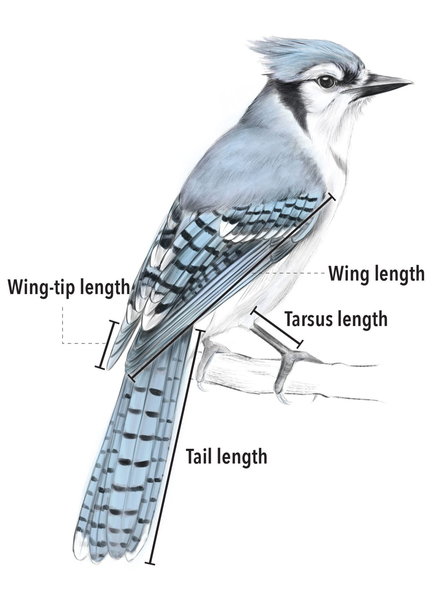
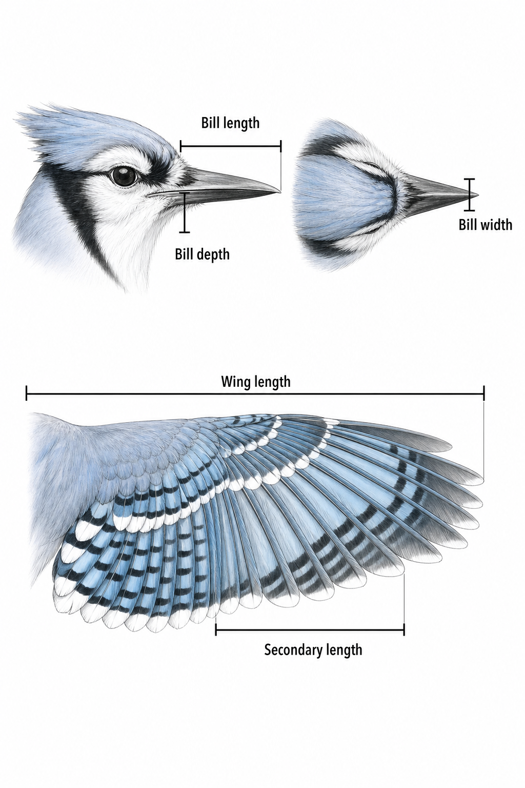

Allometry
Allometry is the study of how one biological trait changes as another measure of size changes. A familiar example is that a larger animal tends to have longer limbs, but not necessarily in direct proportion to body size. Allometry measures how fast one feature changes relative to the other.
A common allometric model is a power law:
\[ Y = aX^b \]
Here, \(X\) is a size measure, \(Y\) is the trait being explained, \(a\) sets the overall scale, and \(b\) is the scaling exponent. Taking logarithms turns the curve into a straight-line model:
\[ \log(Y) = \log(a) + b\log(X) \]
The exponent carries the biological meaning. When the two measurements have the same dimensions, \(b=1\) means proportional or isometric scaling; \(b>1\) means that \(Y\) increases more than proportionally; and \(b<1\) means that it increases less than proportionally. Logging also lets very small and very large organisms share a readable axis, but it does not repair poor measurements, missing data, mixed sampling units, or uneven sampling. Those problems have to be understood before fitting an allometric line.
Read Baillie et al. (2022), Ten simple rules for initial data analysis, PLOS Computational Biology 18(2), for a short workflow: checking data structure, metadata, missingness and plausibility before modelling.
All code runs in your browser. The first cell may take a few seconds while Python loads.
Part I · AVONET
AVONET is a global bird trait database assembled by Tobias et al. (2022). Its raw-data worksheet combines measurements from museum specimens and live birds. A measured row records the bird’s taxonomic identities, sampling provenance, sex and age, collection geography, ten morphological traits, the measurer, and whether the AVONET measurement protocol was used.


The dataset is documented in Tobias et al., “AVONET: morphological, ecological and geographical data for all birds”, published in Ecology Letters. Keep the paper open while working through this EDA: it shows how the dataset’s authors turned these records into visual evidence.
Review every visualisation in the paper, treating every panel in a multi-panel figure as a separate design decision. For every figure or panel, consider:
- Visual form: What type of visualisation is used: scatterplot, map, histogram, density display, diagram, coefficient plot, or another form? What marks and channels carry the information?
- Data visualised: Which features are shown, what are their semantic data types, what does one observation represent, and which rows or taxa are included or excluded?
- Transformation and aggregation: Are values raw, logged, standardised, binned, averaged, modelled, grouped by species, or otherwise transformed?
- Scales and encodings: Are position and colour scales linear, logarithmic, categorical, sequential, or diverging? What is mapped to position, colour, size, shape, connection, or facet?
- Claim supported: What comparison, pattern, or model result is the panel intended to support? State the claim in one precise sentence.
- Strength of support: Does the chosen visualisation make that claim convincing? Identify ambiguity, overplotting, aggregation effects, uncertainty, missing context, or a plausible alternative visual form.
Load and inspect data and metadata
Start by reading both the data and the metadata supplied with it. .shape gives the number of rows and columns, while info() reports each column’s storage type and non-missing count.
Non-null counts differ between columns. Two columns (locality and country) have zero observed values: entirely empty in this release. Every column is stored as one of two data types, text (object) or decimal number (float64).
Read the identifier and text fields one by one
First check that the dictionary actually covers the file we loaded. Its column field should contain exactly the same names as birds.columns.
Now make a small inspection function. For one named field it prints the definition supplied by AVONET, its Pandas storage type, coverage, number of distinct observed values, and its five most frequent values. This is more useful than asking describe() to treat every text field as though it had the same role.
Start with the five taxonomic fields, one at a time.
avibase_id is explicitly a species or species-group identifier. It does not identify an individual bird, which is why the same value occurs on many rows. The other four fields give names under different taxonomic systems: BirdLife, eBird/Clements, eBird’s broader assignable group, and BirdTree. Their different vocabulary sizes are evidence of taxonomic splits, lumps and unassigned individuals, not duplicate columns to discard.
Next inspect the fields that come closest to identifying a sampled bird.
The metadata calls source the museum or research collection and specimen_number an accession or collection number. A specimen number is therefore only meaningful within its source. Test the pair before treating it as an individual identifier.
So the file does not let us conclude that every row is a different bird, or that a repeated label is the same bird measured repeatedly. Specimen numbers are absent from 16,578 rows. Even the candidate key source + specimen_number repeats for 462 labels, and 262 of those labels are attached to more than one species. Values such as NOLABEL, reused collection numbers and transcription problems are mixed together. Do not deduplicate on this pair. The defensible wording for now is measurement record; later we will count records per species and examine full-row duplicates separately.
Finish the documented text-like fields individually.
sex is a three-level category (M, F, U), not free text. locality and country are completely absent because those data were embargoed in this release; country_wri is the available harmonised geography. measurer is an identifier for the person taking the measurements, not for the bird. publication is provenance for measurements transcribed from published sources and is populated for only a small subset of rows. Each field supports a different question, despite Pandas storing most of them as object.
The number columns. The default describe covers exactly these:
Read the min and max columns and the floats split in two as well. Ten are measurements with continuous ranges in millimetres. But data_type, age and protocol run between 0 and 2, and counting distinct values confirms the suspicion:
Exactly two distinct values each. That is not a measurement; it is an encoding stored as a number, and no amount of arithmetic on the codes means anything. Deciding what the codes stand for is a job for documentation, so read it.
The metadata loaded above also classifies the numeric fields. Count its documented types before interpreting the numeric summary.
The categories in that summary come from AVONET, not from us. Two fields have no documented variable type; keep them as not specified until their definitions and observed values have been checked.
One more thing to establish about the dictionary: search it for GAPSPECIES, a value that will matter in a moment, and the search comes back empty. Dictionaries describe columns; they do not always describe every convention hiding in the values.
Back to the numbers. info() showed 90,020 observed values in data_type, although the file has 90,371 rows. Inspect the values before deciding what the missing 351 mean.
The codes 1 and 2 need documentation. Read the matching row in the metadata supplied with AVONET.
The metadata identifies 1 as a museum specimen and 2 as a live individual. It does not explain the missing values. Isolate those rows and ask what fills the fields they do have:
Every one of the 351 rows carries GAPSPECIES in the measurer field: a label, not a person’s name, and, as the dictionary search just showed, an undocumented one. Profile every column in the subset to see which fields are populated.
Only the five taxonomy/identifier fields and measurer are populated. Check the row counts and confirm that none contains a morphology value.
The sequence above establishes what the rows represent. There are 90,020 rows with a recorded specimen type. The other 351 contain names from the different taxonomic systems, carry the GAPSPECIES label, and contain no morphology measurements. They are taxonomy links, not measurement records.
Now label the three row types and count them.
Now the species count has a defined numerator: measured records, excluding the 351 taxonomy-only rows. Count records within the documented BirdLife species field.
There are 89,682 measured records with a BirdLife species label, spread across 10,669 species. The median species contributes five records; the middle half contribute four to nine; 383 species contribute only one; and the largest contributes 784. These are record counts, not proven counts of unique birds. That distinction follows directly from the incomplete and non-unique specimen identifiers above. We will visualise this unequal sampling depth after the Altair introduction.
From semantic type to visual form
Pandas reports how values are stored. AVONET documents what the values mean. Altair needs to know how a field should behave in a particular chart. Check all three before choosing an encoding.
Three fields store their categories as numbers: data_type, age and protocol. Here they are alongside their Pandas storage types and observed values:
All three columns contain numbers, but their documented values are category codes. A mean data_type or mean protocol has no useful interpretation. For a chart of specimen type, data_type is therefore nominal. For a chart that orders immature before adult, age could be ordinal. The decision is recorded with the chart and justified from the documentation.
Altair in one sentence
Vega-Altair is a declarative visualisation library. We describe what the data fields mean and how they should be mapped to visual properties; Altair produces the axes, scales, legend and marks. The smallest useful grammar is:
data + mark + encodings
A real chart can also include transformations, scales, guides, interactions, facets and layers, but those three pieces are the foundation. Altair works best with tidy data: one row per observation and one column per feature.
The first question is: how many AVONET rows are there of each record type? The unit being counted is an AVONET row, data_type supplies the groups, and the aggregation is a row count. Decode the documented category codes, then build a small table in which one row is one record type.
Now attach that table to an Altair Chart, choose rectangular marks, and map the two fields to position:
Read that code literally:
alt.Chart(record_counts)supplies the data..mark_bar()says that each result should be drawn as a rectangle..encode(...)maps data fields to visual channels.x="rows:Q"mapsrowsto horizontal position and declares it quantitative.y="record_type:N"mapsrecord_typeto vertical position and declares it nominal.
The shorthand is always "field:type". The field is a column in the table; the letter after the colon tells Altair what the values mean. The main semantic types are:
Q, quantitative: numeric magnitude, where differences or ratios may be meaningful;N, nominal: unordered categories, where only same/different is meaningful;O, ordinal: categories with a defensible order;T, temporal: dates or times;G, geographic: GeoJSON shapes.
An identifier is normally declared N, but that does not make it a good axis or colour field. A species identifier with 11,020 levels is usually better used for filtering, grouping or a tooltip than for 11,020 coloured marks. Altair can infer types from a DataFrame, but numeric category codes are exactly why we will declare them explicitly throughout this course.
From a default chart to an intentional chart
The short form is useful for sketching. The channel objects alt.X, alt.Y, alt.Color and alt.Tooltip expose the design decisions we need for a finished chart:
Several different objects are doing different jobs:
- the mark controls the geometric object and its constant appearance;
- an encoding maps a changing data value to position, colour, size, shape or another visual channel;
- a scale translates a data domain into visual values such as pixels or colours;
- an axis or legend is a guide that explains that scale;
sort="-x"orders categories by decreasing x-value;- a tooltip reveals values on demand without crowding the static display;
.properties(...)controls the view, not the data transformation.
The zero baseline is deliberate: bar length represents magnitude, so each bar must begin at zero. Later we will use non-zero and logarithmic scales when the question and mark justify them. The choice of scale changes the comparison.
A constant is not an encoding
Compare mark_bar(color="#4e79a7") with encode(color="record_type:N"). The first gives every mark the same colour; the second creates a data mapping and therefore a colour scale. Both are valid code, but they say different things.
Colour is redundant in the right-hand chart because vertical position already separates the three record types. Use the constant colour unless the colour mapping helps answer the question.
Aggregation is part of the specification
Altair can also aggregate. The next chart receives AVONET’s 26-row metadata table, not a pre-computed count table. count():Q asks Altair to count rows, while documented_type:N supplies the groups. This is the visual equivalent of metadata_types.groupby("documented_type").size().
The same grammar supports mean(field), median(field), sum(field), min(field) and max(field), as well as binning and other transformations. Changing the aggregate changes what one mark represents and therefore changes the claim. We will compare those choices explicitly later in the EDA.
Return to the record_chart cell and try these edits separately:
- Swap the x and y encodings. What changes, and what stays invariant?
- Remove
sort="-x". Which ordering does Altair choose? - Replace
.mark_bar(...)with.mark_point(filled=True, size=100, color="#4e79a7"). Does a zero baseline still matter in the same way? - Change
rows:Qtorows:O. Inspect the axis. The numbers did not change, but their semantic type (and therefore the scale) did.
For each edit, name the component you changed: data, mark, encoding, aggregation, scale, guide or view. That vocabulary will be used throughout the course.
Use this sequence when designing the charts that follow:
feature → data type → question → transformation/aggregation → mark → encoding → scale → interpretation
We still have to decide whether a coded number is a category, whether mean or median is suitable, and which rows belong in the analysis. Altair applies those decisions to the chart specification. The same field can support different charts for different questions: country_wri could be counted in a bar chart to examine sampling balance or located on a map to examine spatial coverage.
Audit every column
The next table extends the structural check to every column: storage type, observed and missing rows, percentage missing, distinct values, and one example.
Why this visual form? column is nominal and has 26 levels, so it works as a text-labelled y-position but not as 26 colours. missing_pct is quantitative, so bar length on a common x-axis makes values directly comparable. Colour shows AVONET’s documented variable type; it is not a classification added for the chart. The quantitative scale is fixed to the meaningful 0–100% domain and starts at zero; truncating a bar scale would exaggerate small differences. Exact values remain in tooltips rather than cluttering every bar.
Two fields, locality and country, are completely blank in this public release; country_wri is the usable harmonised geography field. The publication field is mostly blank because most rows are direct specimen or field measurements rather than measurements transcribed from papers. Wing length is almost complete, while several flight-shape and beak measurements are absent in roughly one-third of rows. There is no single universal “complete case” definition: it depends on the traits being compared.
Identity and taxonomy checks
The four taxonomic name columns are not redundant copies. They represent different taxonomic authorities, and splits or lumps can assign the same measurement record to different names. AVONET also supplies avibase_id as a more stable bridge.
There are 261 copies beyond the first occurrence, involving 457 rows. These are exact repeated records and therefore candidates for investigation. They still are not automatic deletions: first trace whether duplication entered when source tables were combined. This check is different from the repeated source + specimen_number labels above, where the rows often disagree on species and clearly cannot all denote repeated measurements of one bird.
Who and what was sampled?
Four coded fields expose the design of the sample. Decode them before using them as if they were continuous numbers.
For these categorical features, count is the natural first aggregate. A sorted bar chart uses position and length to compare category frequencies; the zero baseline gives length an honest origin. Computing a mean of the stored codes would be concise but semantically empty. Dividing each count by its field total would produce proportions instead when relative composition, rather than workload, is the question.
This is predominantly a museum dataset: 75,843 measured rows are specimens and 14,177 are live-bird records. Males outnumber females, 14,276 measured records have unknown sex, 1,269 rows are coded as immature measurements, and 38,666 measured rows were taken under a protocol other than the AVONET protocol. These imbalances may matter if sex, age, preservation, or protocol changes a trait.
The unit of analysis: measurement records per species
With the design fields decoded, the first content question is not about any measurement. It is about the unit of analysis. Rows are individual measurement records intended to describe specimens or live birds, but the identifier audit showed that row identity is not perfect. The claims of this part are about species, so before looking at a trait we ask: how many measured records does each species contribute, and how unevenly is that effort spread? Every later summary inherits its stability from these counts.
The median measured species has five records, 383 species have only one, and the most-sampled species has 784. Treating all 90,020 measured records as independent would let a few heavily sampled species dominate; treating every species mean as equally precise would ignore the opposite problem. And the accounting closes: 10,669 species have at least one measured record, and the remaining 351 of the 11,020 named species are exactly the taxonomy-only GAPSPECIES rows.
Provenance and geographic coverage
Large global datasets are often collections of collections. The leading source, country, and measurer codes reveal whether the table is broadly balanced or dominated by a few contributors.
Each view performs two transformations before drawing a mark: count rows by category, then keep the 15 largest counts. That top-\(N\) filter makes labels readable but hides the long tail, so the title must disclose it. We use three separate panels with independent category axes instead of one shared colour legend containing unrelated codes.
The NHMUK source alone contributes 46,060 rows, and the largest country counts come from tropical, species-rich regions rather than an even global sample. Contributor concentration is not automatically a flaw, but it warns us that source, protocol, geography, and morphology may be entangled.
Recording precision by measurer
Screening is not only about values; it is also about how values were produced. One classic check is measurement granularity: what fraction of each measurer’s wing lengths are whole millimetres? Rulers, calipers, and personal habit leave different fingerprints, and a mixture of precisions inside one column is worth knowing before comparing small differences.
Among the ten largest measurer codes, the share of whole-millimetre wing lengths runs from about 79% to exactly 100%: some measurers worked to a tenth of a millimetre, others to the nearest millimetre. That caps the precision of any comparison that mixes their records. In the initial-data-analysis literature this screening step is called checking for digit preference, or heaping.
All ten morphological columns
The table contains ten morphology fields: four beak dimensions, tarsus length, three wing-feather lengths, hand-wing index, and tail length. The summary below includes every one of them. The 1st and 99th percentiles are shown alongside minima and maxima because means and standard deviations alone hide long tails and suspicious edge values.
All observed trait values are positive, so logarithms are mathematically defined. That does not make every value biologically credible. Values of exactly 0.1 occur in several feather fields and in hand-wing index; on the log scale they become isolated points far below the main distributions. They need species-level inspection before deciding whether they are measurements, rounding artefacts, or placeholders.
A histogram is already an aggregate chart: continuous values are transformed into intervals with bin, then rows are aggregated with count. Changing the number or width of bins can reveal or conceal modes and outliers. A box plot would instead aggregate to quartiles and whiskers; an empirical cumulative distribution would preserve every rank; a strip plot would preserve every row but overplot badly at this sample size. Here, identical histogram marks make shapes comparable across traits, while independent facet scales let each trait use its own range. That choice helps see shape but prevents direct comparison of absolute magnitudes across panels.
Validation rules, stated as code
Suspicion should be turned into named, checkable rules. Three kinds are available here. Physical rules bound what a measurement can be. Consistency rules relate columns that must agree: Kipp’s distance is part of the wing, so it cannot exceed wing length. Derivation rules recompute stored derived fields from their ingredients: hand-wing index is defined as 100 x Kipp’s distance / wing length, so we can rebuild it and compare it to the stored column.
The zero matters as much as the violations. No bird’s Kipp’s distance exceeds its wing, which is evidence those two fields really were measured on the same wing. The four secondary-feather violations and 37 rebuilt-index mismatches are rows to inspect; the 18 wing lengths at or below half a millimetre are the 0.1 placeholders found above, now caught by a rule rather than by luck. Writing checks this way, as declared rules with pass and fail counts, comes from the data-validation literature (van der Loo and de Jonge, Statistical Data Cleaning); the same idea powers tools such as pandera in Python and validate in R.
External validation
Internal checks cannot catch a dataset that is consistently wrong. Peng’s EDA checklist insists on validating against at least one external source, so we compare species-mean wing lengths for four well-documented species with the ranges given in standard field handbooks.
Four species is a spot check, not proof. But this is the kind of check that catches unit errors, decimal shifts, and column mix-ups that no amount of internal consistency can reveal. If the mallard’s mean wing had come out at 26 mm or at 2,634 mm, everything downstream would have been wrong for a reason no histogram could explain.
Row-level completeness
Column percentages do not show whether gaps fall in the same birds. Count the number of observed morphology fields in every row, then ask whether leading data sources measured the same trait set.
There are 45,669 rows with all ten traits, while 44,351 measured rows have at least one morphology gap. The 351 taxonomy-only rows correctly appear with zero traits. A blanket dropna() would therefore throw away about half the table even when an analysis needs only two columns.
The heatmap uses a sequential quantitative colour scale with a fixed 0–100% domain: darker colours mean more observed rows. That is different from the discrete palette used for documented variable types in the missingness chart. Colour is less precise than position, but it is effective for scanning a two-dimensional matrix for blocks and exceptions.
The pattern in this heatmap has a name. Statisticians distinguish data missing completely at random (MCAR), missing at random given known variables (MAR), and missing not at random (MNAR, where the gap depends on the unobserved value itself). Whole missing blocks aligned with sources are direct evidence against MCAR: absence here is predictable from provenance. The practical consequence is that complete-case analysis does not just shrink the sample, it reweights it toward the sources that measured everything, and any trait difference between sources rides along. The taxonomy is from Little and Rubin’s Statistical Analysis with Missing Data, and “which mechanism?” is a standard screening question.
Linear and logarithmic scales
A scale maps a data domain to a visual range. An x-scale maps numbers to horizontal pixel positions; a colour scale maps values or categories to colours. The scale is part of the argument, because it defines what equal visual distances mean.
The next two charts use exactly the same values and point marks. On the linear scale, equal distances represent equal differences. On the logarithmic scale, equal distances represent equal ratios.
The same decision matters in the bird measurements. A linear scale foregrounds absolute millimetre differences among larger birds; a log scale opens the small-bird region and frames the relationship in ratios, which is appropriate for a power law. A log scale is only defined for positive values, so its use depends on the earlier validity check.
Notice another scale rule: bars generally need a zero baseline because length encodes magnitude; scatterplots do not always need zero because position, not length, carries the comparison. Any truncated position scale should still be visible and justified. A scale can reveal structure, but it must never be used silently to manufacture it.
Correlations among the ten traits
A correlation matrix is a compact scan of all pairwise linear relationships among the logged traits. It is descriptive, not a fitted allometric model: each cell uses the rows available for that pair, ignores taxonomy and shared evolutionary history, and does not distinguish within-species from between-species variation.
The diverging colour scale is centred at zero because positive and negative correlations are qualitatively different directions. Its symmetric \(-1\) to \(1\) domain prevents the strongest observed value from redefining the meaning of the colours. The printed values provide precision; colour provides pattern.
Regression on raw and logged scales
A regression line can summarise a bivariate trend, but its meaning depends on the variables fitted. A straight-line fit in raw millimetres asks about additive change. A straight-line fit after logging both features asks about proportional change and estimates an allometric exponent. Merely changing the axis scale is not the same as changing the model.
The charts below use the same deterministic 8,000-row display sample. Altair’s transform_regression() performs the aggregation from thousands of points to the fitted line. The accompanying table makes the transformation and fit statistics explicit.
The red line is a model layer, not proof of mechanism or causality. Outliers can pull it, unevenly sampled species can dominate it, and a single pooled line can hide different trends by sex, source, protocol, or species. A useful visualisation states what was fitted, on which scale, to which rows, and at which unit of analysis.
Subgroup check: museum specimens versus live birds
The record-type field from the design audit earns its keep here. Fit the same log-log regression separately for museum specimens and live birds:
In the full data the museum-specimen slope is 0.62 with r = 0.63, close to the pooled fit, while the live-bird slope is almost exactly zero. That is not because live birds obey different biology. The live records cover only 702 species, mostly small passerines from a few ringing projects, so their tarsus lengths span a much narrower range (log10 spread 0.16, versus 0.25 for specimens). Within a thin slice of the size axis the between-species scaling signal nearly vanishes and noise dominates: classic range restriction. The lesson generalises. A pooled line describes the mixture you happened to assemble, and screening the design fields first is what lets you notice.
Choosing an aggregation function
An aggregate turns many rows into one value or mark. Different functions are not interchangeable summaries:
| Aggregate | Question answered | Useful visual role | Main caution |
|---|---|---|---|
count |
How many records? | bar length, point size, annotation | sampling effort is not biological magnitude |
mean |
What is the arithmetic centre? | point, line, model input | sensitive to skew and outliers |
median |
What is the middle observed value? | point, line inside a box plot | ignores distance from the middle |
min, max |
What is the observed range? | endpoints of a rule | extremely sample-size and outlier sensitive |
| 25th/75th quantiles | Where is the middle half? | box or thick interval | hides tails |
| standard deviation | How dispersed are values around the mean? | error bar or uncertainty channel | assumes the mean is a useful centre |
sum |
What is the total amount? | bar/area for additive quantities | meaningless for anatomical lengths here |
The next transformation groups wing measurements by species and calculates all the defensible summaries at once. The chart then layers the full range, interquartile range, median, and mean for the 15 most-sampled species. Each layer answers a different question about the same groups.
Mean and median can be compared across every measured species. The diagonal reference line means equality; departures identify species whose wing-length distribution is asymmetric or affected by extreme records. Point area encodes sample size, reminding us that a difference based on two birds is not as stable as one based on two hundred.
This is why every chart caption should name both the grouping level and the aggregate function. “Wing length by species” is incomplete; “median individual wing length within each species” is a reproducible visual claim.
What the EDA has established
- The raw worksheet contains 90,020 measured records and 351 taxonomy-only rows, not 90,371 interchangeable observations.
- All 26 columns now have an explicit semantic type, role, unit, coverage count, suitable aggregate, candidate visual form, and scale.
- Taxonomic names depend on the chosen authority;
speciesis the BirdLife version used for the next aggregation. - Sampling is concentrated by source, geography, measurer, sex, and protocol.
- Every morphology field is positive, but extreme 0.1 values require biological investigation rather than automatic acceptance.
- Only 45,669 rows have all ten morphology fields, so cleaning must be question-specific.
- Species sampling depth ranges from one to 784 measurement records, making the unit of analysis a substantive choice rather than a formatting detail.
- Linear and logarithmic scales show different comparisons; count, mean, median, range, quantiles, and standard deviation answer different questions.
- Regression lines summarise a fitted relationship on a declared scale; they do not establish mechanism, causality, or a universal trend.
- Named validation rules returned 0, 4, 37 and 18 violations; the zeros are findings too.
- Four handbook spot checks put species-mean wing lengths inside published ranges, so units and columns line up with the outside world.
- Recording precision differs by measurer, from tenth-millimetre habits to whole-millimetre habits.
- The pooled regression slope is carried by the museum series; the live-bird subset alone, restricted in range, shows almost none of it.
Only after this audit are we ready to choose two traits and define the rows that can support their comparison.
One principle before moving on. Everything above is exploration, and exploration generates hypotheses rather than confirming them: a pattern noticed while rummaging cannot be certified by the same look at the same data (Tukey’s exploratory/confirmatory distinction; Gelman and Loken call the danger the “garden of forking paths”). This part stays exploratory. When a later assessment asks you to test a claim, the test must be specified before the rummaging starts.
- Tukey (1977), Exploratory Data Analysis: the founding text.
- Baillie et al. (2022), Ten simple rules for initial data analysis, PLOS Computational Biology: the assigned reading for this page.
- Huebner et al. (2018), A contemporary conceptual framework for initial data analysis, Observational Studies 4:171–192: the full IDA framework.
- Peng, Exploratory Data Analysis with R: the EDA checklist (“check your n’s”; “validate with an external source”).
- Wickham, Cetinkaya-Rundel and Grolemund, R for Data Science, EDA chapter: variation and covariation as the two standing questions.
- van der Loo and de Jonge (2018), Statistical Data Cleaning with Applications in R: validation rules as code.
- Little and Rubin, Statistical Analysis with Missing Data: the MCAR / MAR / MNAR taxonomy.
- Broman and Woo (2018), Data organization in spreadsheets, The American Statistician: data dictionaries and raw-file hygiene.
Cleaning: where do the rows go?
We want to plot beak length against tarsus length, which means every row we use needs both measurements (and a species name). Museum specimens are imperfect: a damaged bill or a folded skin means one trait was measured and the other was not. Count the gaps before touching anything:
Every column has holes, and they are not the same holes. Keep only the rows that can support the comparison we actually want to make:
We just discarded nearly a quarter of the dataset. That is a legitimate cleaning step, but it is a decision, it changes what “n” means in every caption downstream, and it must be disclosed. Any figure built from this table should say 69,509 measurement records, not 90,371.
Clinical trials report exactly this accounting as a flow diagram (the CONSORT standard), and the habit transfers to any analysis: you should be able to draw the path from raw file to analysed rows, with the rule that caused every drop.
The measurement-record level
Each point is one retained measurement record. Most are intended to represent one specimen or live bird, but the identifier audit showed why that is not a guaranteed one-to-one count of unique individuals. Both axes are logged: allometry is about ratios, and a hummingbird and an ostrich need to share a readable axis.
The groupby: from measurement records to species
One line of code changes what a point means. groupby("species").mean() collapses the retained records for a species into one species mean:
Averaging removed 59,000 points but the cloud barely tightened (r ≈ 0.61 → 0.62). Within-species measurement scatter is small compared to the real, ecological differences in beak shape between species: hummingbirds, finches and curlews genuinely sit in different places. Aggregation is not a magic de-noiser: it removes exactly the variation that happens within groups, no more.
Your turn: a different trait pair
Repeat the whole pipeline (cleaning included) for wing length vs tarsus length. Wing length has its own, different pattern of missing values, so start from birds, not from clean. Print n after cleaning, and show the species-level n in the plot title.
Hint 1: The subset to require is ["species", "wing_length_mm", "tarsus_length_mm"]. Beak gaps are irrelevant to this comparison; don’t drop rows for a column you aren’t using.
Hint 2: birds.dropna(subset=...) then .groupby("species")[["wing_length_mm", "tarsus_length_mm"]].mean(), then ax.scatter(np.log10(...), np.log10(...), s=4, alpha=0.25).
Fully worked solution:
clean_w = birds.dropna(subset=["species", "wing_length_mm", "tarsus_length_mm"])
print(f"{len(birds):,} rows → {len(clean_w):,} rows")
species_w = (clean_w
.groupby("species")[["wing_length_mm", "tarsus_length_mm"]]
.mean())
fig, ax = plt.subplots(figsize=(8, 6))
ax.scatter(np.log10(species_w["tarsus_length_mm"]),
np.log10(species_w["wing_length_mm"]),
s=4, alpha=0.25, color="#e66852")
ax.set_xlabel("log10 tarsus length (mm)")
ax.set_ylabel("log10 wing length (mm)")
ax.set_title(f"Species means (n = {len(species_w):,})")
plt.show()Wing length is missing in only ~1,100 rows, so this cleaning keeps far more data than the beak comparison did: the n you report depends on the comparison you chose. The wing–tarsus cloud is also tighter than beak–tarsus: both are limb-skeleton traits that track overall body size, while beaks track feeding ecology.
And look at the bottom of your chart: five points stranded far below the cloud, at log10(wing) ≈ −1. Those are the five kiwi species: flightless birds whose wing length is coded as 0.1 mm, a placeholder, not a measurement. dropna cannot catch missingness that has been written down as a fake number. Keep that idea within reach: this is not the last sentinel value in this course, and the only reliable detector is looking at the chart.
What Part I established
The relationship was “the same” at both levels (log-linear, positive), but every property a reader can quote changed with the level: n went from 90,371 raw rows to 69,509 usable measurements to 10,601 species means, and the cleaning decision was different for every trait pair. A claim made at one level does not automatically hold at another. When you caption a chart, the level of aggregation is part of the claim: say what one point is, say what n is, and say where the dropped rows went.
Part II · Amniote Life-History Database
The second dataset served with this page is the Amniote life-history database (Myhrvold et al. 2015): one row per species, 21,322 of them across birds, mammals and reptiles. Ten columns: four taxonomy fields (class, order, family, genus) plus the species name, and five life-history traits (adult body mass in grams, maximum longevity in years, litter or clutch size, female age at maturity in days, birth or hatching weight in grams).
The life-history CSV does not contain a phylogenetic tree or divergence dates. The published figure below provides phylogenetic context from a separate source.

Apply the same sequence used in Part I, then take one question through to a finished chart. The cells below identify each stage and leave the analysis to you.
Stage 1: load and inspect the structure. Report the shape, view several rows, inspect storage types, count missing and distinct values, and build a small column dictionary with semantic types. Note which columns are almost complete and which are mostly missing. Use the Myhrvold et al. paper and the serving notes to interpret what you find.
Stage 2: the unit of analysis. One row is a species, but species sit inside genera, families, orders and classes. How are the species spread across the three classes? Across families? Which family is largest, and how many families contain exactly one species? What do those counts imply for any family-level aggregation you might do later?
Stage 3: validation. State validation rules and report violation counts: can a body mass be zero or negative? Can an age at maturity exceed a maximum longevity? (Watch the units.) Then validate one species against the world: pick an animal you know and check its values against an external reference. One warning sign to take seriously: when a rule fires far more often than genuine errors plausibly occur, you have not found thousands of mistakes, you have found a convention. Work out what it is, then handle it explicitly.
Stage 4: choose a question and account for the rows. Pick a trait pair. Mass and longevity is the classic allometry, but clutch size, maturity and birth weight are all open questions. Define exactly the rows that can support your comparison, and draw the row flow from the full table to your analysis table.
Stage 5: the chart, and one rank up. Produce one final chart of your relationship, with a caption that states the unit of analysis, the n, every transformation and aggregation, the scales, and where the dropped rows went. Then aggregate one taxonomic rank up (family means of the logged values), redraw, and say in two sentences what the aggregation gave you and what it took away.
How to know you got it. No solution button: this investigation is yours. But the accounting has fixed points. Your class counts must sum to 21,322 exactly. If your audit is honest, you will conclude that missingness is most of this table, not an edge case. Your validation stage should catch at least one genuinely suspicious set of rows (there is more than one to find, and at least one involves units). And whatever pair you choose, your final caption must survive the Part I checklist: what is one point, what is n, what was transformed, what was dropped. If your family-level chart averages raw grams instead of logs, one elephant will drag its whole family across the plot; you should be able to explain why.
Sources
- Tobias et al. (2022) AVONET: morphological, ecological and geographical data for all birds, Ecology Letters 25:581–597. The complete 26-column raw-data worksheet from supplementary dataset 1 is served here: all 90,371 rows (90,020 measurement records plus 351 taxonomy-only rows). Column names are normalised to
snake_case, measurement units are included in names, and trailing whitespace in text fields is removed; observed values are otherwise unchanged. The official AVONET metadata worksheet is served asavonet_metadata.csv, with its 26 definitions mapped to the served column names. - Myhrvold et al. (2015) An amniote life-history database to perform comparative analyses with birds, mammals, and reptiles, Ecology 96:3109. Served with 10 of 36 columns, all 21,322 rows, values as published.